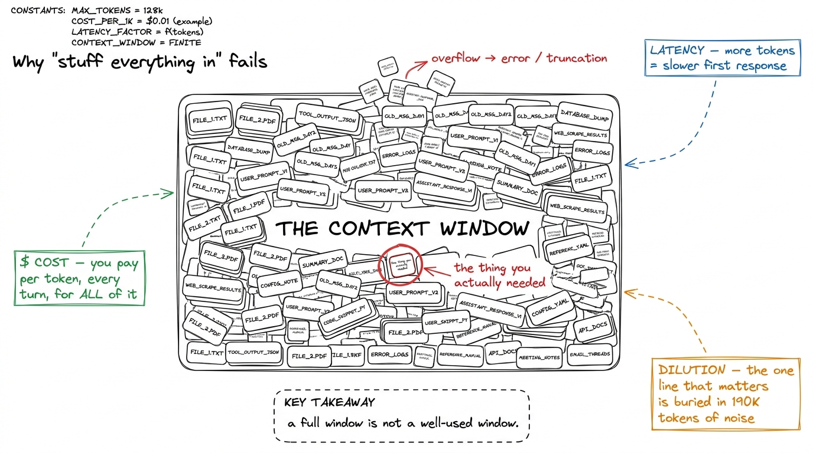
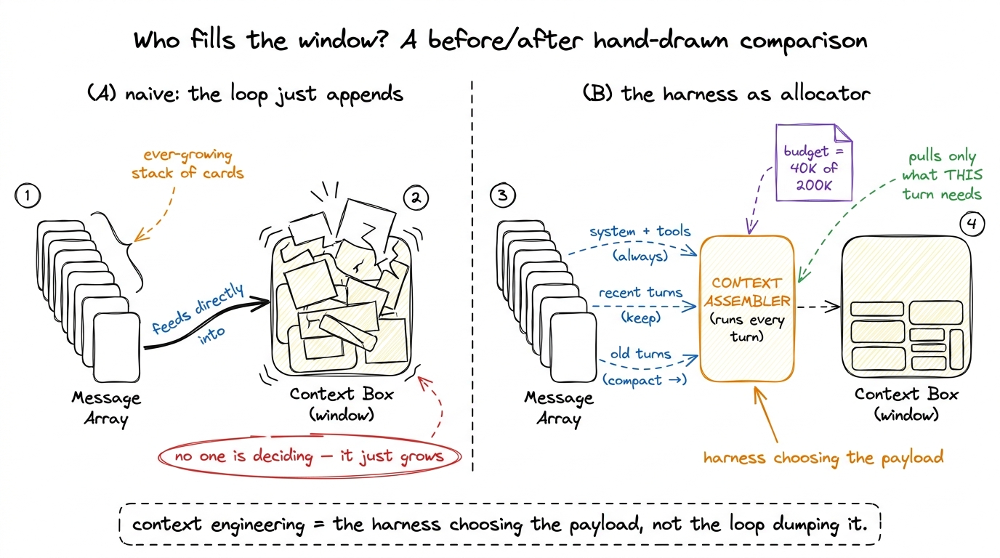
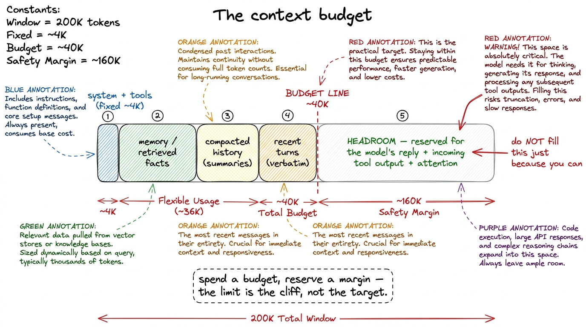
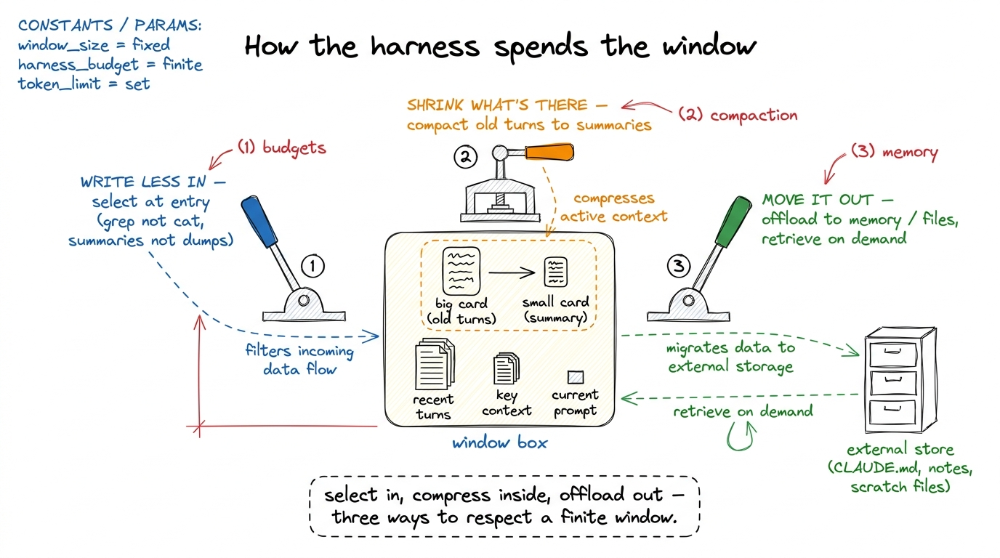

The context window as a resource CONTEXT
In the last section we built a harness that acts — a loop that calls the model, runs tools, and feeds the results back. But watch what the message array does over a real task: every lap, it gets longer. The user request, the model's reply, a file it read, a shell command's output, another reply, another file. Twenty laps in, that array is enormous, and all of it is being shipped to the model on every single call. Nobody decided that should happen. It happened because our loop's only rule was "append everything, forever."
This chapter is about the moment you stop letting that happen by accident. The context window — the fixed span of tokens the model can see at once — is not free storage you fill until it's full. It is the scarcest, most contested resource in the whole harness, and the harness's job is to be its allocator. Everything in this section — budgets, compaction, memory — is a strategy for spending it well. First, though, you have to feel why it's scarce, because the naive instinct is exactly backwards.
The naive instinct: "just stuff everything in"
Here is the reasoning that feels right and is wrong. Modern models have huge context windows — 200K tokens, a million, more.1 Long-context benchmarks are seductive here. A model can technically accept 200K tokens and still reason poorly across them. Capacity and usable capacity are different numbers, and the gap is where context engineering lives. The codebase fits. So why think at all? Read every file, dump the whole git history, keep every tool result forever, and let the model sort out what matters. More context, more information, better answers — right?
Three things break, and they break in ways that get worse exactly as the task gets more ambitious.

figure rendering · Stuffing the window inflates cost and latency and buries the signal. ACost. You pay per token, and you pay every turn. This is the part people miss. It isn't that reading a 50K-token file costs you 50K tokens once — it's that those 50K tokens ride along on every subsequent model call for the rest of the session, because they're sitting in the messages array your loop faithfully re-sends each lap. A twenty-turn task with a bloated context can cost you the same tokens ten, fifteen, twenty times over.2 Prompt caching softens this — the stable prefix of your context can be cached so you pay a reduced rate on repeats. It is a real and important optimization, covered in prompt caching, but it is a discount on waste, not a reason to create the waste. The bill scales with the product of context size and turn count, not their sum.
Latency. The model has to read every token you send before it emits the first token of its reply. A packed window means a slower time-to-first-token on every turn. An agent that pauses for four seconds before each action feels broken even when it's correct, and over a long task those pauses compound into minutes of dead waiting.
Dilution — the one that actually humbles you. This is the subtle one, and it's the reason "more context" doesn't monotonically mean "better answers." Attention is finite. When the fact the model needs is one line buried in 190K tokens of half-relevant file dumps, the model's attention over that line is thinner than it would be in a tight 8K-token context. The famous name for one flavor of this is lost in the middle: models reliably attend well to the start and end of a long context and go fuzzy on what's stranded in the middle.3 "Lost in the middle" (Liu et al.) showed retrieval accuracy sagging for information placed mid-context even when the model nominally had room for it. The practical upshot for a harness: position is a resource too — what you put where matters, not just how much you put in. So padding the window with "just in case" material doesn't just cost money and time — it can make the answer worse, by drowning the signal you were trying to provide.
Sit with that last point, because it inverts the naive model completely. Adding context is not a free hedge. Every token you add is a token of the model's finite attention you've spent, and if you spend it on noise, you have less left for signal.
Context engineering: the harness is the allocator
So the real question each turn is not "what could I show the model?" but "what is the smallest set of tokens that lets it take the right next action?" That question — asked fresh on every lap of the loop — is context engineering. And the thing that answers it is the harness.
Recall from what is a harness the three disciplines we keep apart. Prompt engineering is what you say in one message. Context engineering is what the model sees each turn — the assembled payload. Where prompt engineering hand-crafts a single instruction, context engineering is a runtime allocation decision, made programmatically, on every call, over a scarce budget. The model is the CPU; the context window is its registers; and the harness is the operating system deciding what gets loaded into those registers for the next instruction.4 The context engineering framing from Anthropic puts it well: the goal is "the smallest possible set of high-signal tokens that maximize the likelihood of the desired outcome." The whole rest of this section is machinery for finding that set.

figure rendering · The shift: instead of the loop blindly appending, an assembler in theThe concrete move is small but total. In the bare harness, this was the whole of our context logic:
# bare harness — the loop just appends, forever
messages.append({"role": "assistant", "content": reply.content})
messages.append({"role": "user", "content": tool_results})The context-engineered version puts a decision-maker between the running history and the model. Instead of sending messages raw, we send an assembled view of it:
def assemble_context(history, budget_tokens):
"""Choose what the model sees THIS turn — not everything, the right things."""
parts = []
parts += always_include() # system prompt + tool schemas: non-negotiable
parts += relevant_memory(history) # facts pulled from a memory store (CLAUDE.md, notes)
recent = keep_recent(history) # the last few turns, verbatim — freshness matters
older = history_before(recent)
used = token_count(parts) + token_count(recent)
if used > budget_tokens: # over budget? the old stuff gets compacted, not dropped
older = compact(older) # summarize it down to a fraction of its tokens
return parts + older + recent
# the loop now calls the model on the ASSEMBLED context, not the raw history
reply = call_model(assemble_context(history, budget_tokens=40_000), TOOLS)That is the shape of every real answer in this section. Notice the three ideas already visible in it, each of which becomes its own chapter. There is a budget — a deliberate cap (40_000) that is a fraction of the window's raw capacity, not the whole thing. There is compaction — when we're over budget, old turns get summarized down rather than sent in full or thrown away. And there is memory — relevant_memory reaches outside the conversation to pull in durable facts the model should always have. The harness is no longer a dumb pipe. It is making an allocation.
A budget, not a ceiling
The single most important reframe: the number that governs your harness is not the model's context limit. It's the budget you choose to spend, which should be well under the limit.
Why leave headroom? Because you are not the only one spending. The model's own reply needs room — max_tokens worth of output has to fit alongside your input. Tool results you can't predict the size of are about to land. And every token you push toward the ceiling is a token in the low-attention zone. Treating the window as a budget of, say, 40K out of 200K isn't timidity; it's leaving the model room to think and act rather than merely room to hold.

figure rendering · The window as a budget: fixed prefix, memory, compacted history, and rThis is exactly how mature harnesses behave. Claude Code watches its context fill and, as it approaches the budget, kicks off compaction rather than sailing into the ceiling. pi's harness is explicit about assembling a bounded context each turn instead of accreting one. None of them wait to hit the wall — because hitting the wall means either an outright error or a brutal truncation that silently drops whatever fell off the end, which might have been the one thing that mattered.
The three levers, and where they live in this section
Once you accept that the harness is the allocator, there are only three levers it can pull, and they map one-to-one onto the chapters that follow.
You can write less in — be selective about what enters at all, so the window stays lean by construction. That's the discipline of budgets, and of not reading a 50K-token file when a 200-token grep would answer the question.
You can shrink what's already there — take the growing history and compress it, so a long session's past collapses into a summary that preserves the decisions without the transcript. That's compaction and summarization, the lever that lets an agent run for hours without drowning in its own history.
And you can move things out of the window entirely — park durable facts in an external store and pull them back only when relevant, so knowledge the agent needs across sessions doesn't have to live in the context at all. That's memory and CLAUDE.md — the reason a good agent starts each run already knowing your project without you re-explaining it, and the reason a tool result can be written to a file and referenced by path instead of pasted in full.

figure rendering · The three levers of the allocator: write less in (budgets), shrink whaThose three levers — select in, compress inside, offload out — are the entire content of context engineering. Everything sophisticated a harness does with context is some combination of them, applied at the right moment by the loop.
What this buys you, and what comes next
Step back and see what the reframe changes. In the bare harness, context was an accident — a byproduct of a loop that appended without thinking, and a ticking clock counting down to the moment the conversation outgrew the window and the whole thing fell over. With context treated as a resource, it becomes a decision — one the harness makes deliberately, every turn, trading tokens for attention the way an OS trades memory for speed. That single shift in stance is what separates an agent that works for one clever demo from an agent that stays coherent, affordable, and sharp across a two-hour task.
We haven't built the machinery yet — we've built the reason for it. We now know the window is scarce, that the harness is its allocator, that the number to respect is a chosen budget and not the raw limit, and that there are exactly three levers to pull. The rest of this section picks up each lever in turn. Next we make the budgets concrete and measurable — counting tokens and setting budgets — because you cannot allocate a resource you cannot measure.